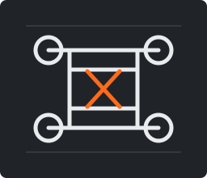

Dịch vụ bổ sung
Dịch vụ bổ sung cho xe của bạn
Ngoài bảo dưỡng thông thường, chúng tôi còn cung cấp nhiều dịch vụ khác: điều chỉnh và hiệu chuẩn các hệ thống hỗ trợ lái phù hợp với mẫu xe và trang bị cụ thể, điều chỉnh và hiệu chuẩn đèn pha, chẩn đoán gầm xe, cân chỉnh góc đặt bánh xe, tiện láng đĩa phanh và các dịch vụ khác.
-

Chẩn đoán ODIS
Chẩn đoán ODIS, đánh giá giá trị đo và các phép đo chuyên môn theo biểu hiện của lỗi.
-

Chẩn đoán chuyên sâu
Nội soi, kiểm tra chất lỏng bằng kính hiển vi, đo CO₂ và áp suất, chẩn đoán bằng khói và tia UV theo triệu chứng của xe.
-

Điều chỉnh và hiệu chuẩn hệ thống hỗ trợ người lái
Front Assist, Rear Assist, Lane Assist, Side Assist, Adaptive Cruise Control, Area View, Laser Scanner, Night Vision, Head-up Display
-
Điều chỉnh đèn pha
Điều chỉnh và cân chỉnh đèn pha (bao gồm đèn LED, HD Matrix LED-Laser).
-

Chẩn đoán hệ thống treo
Kiểm tra bộ giảm chấn và phanh, bao gồm phanh đậu điện, và phát hiện độ rơ ở cả hai cầu xe.
-

Căn chỉnh bánh xe
Chúng tôi sử dụng thiết bị của nhà sản xuất với công nghệ 3D để căn chỉnh bánh xe.
-

Tiện láng đĩa phanh
Chúng tôi tiện láng đĩa phanh trực tiếp trên xe mà không cần tháo đĩa.
-

Bảo dưỡng phanh tang trống sau xe điện
Kiểm tra, bảo dưỡng phanh tang trống phía sau. Điều chỉnh cơ bản chính xác với sản phẩm thuộc dòng T10635 theo tài liệu dịch vụ của loại xe cụ thể.
-

Thay thế ống lót tay đòn và khung phụ
Thay thế chuyên nghiệp các cao su khung phụ và cao su tay đòn bằng dụng cụ chuyên dùng VAS. Trên xe được chọn, thay thế là có thể mà không cần phải tháo toàn bộ cụm cầu xe.
-

Thay dây đai cam và xích
Thay thế dây đai, xích định thời chuyên nghiệp theo đúng quy trình bảo dưỡng của nhà sản xuất.
-

Hộp số DSG và S tronic
Chẩn đoán toàn diện, bảo trì và sửa chữa cơ khí của các hộp số tự động DSG và S tronic.
-

Bảo dưỡng xe hybrid và xe điện
Bảo dưỡng chuyên nghiệp, kiểm tra bảo dưỡng định kỳ và chẩn đoán xe hybrid và xe điện của Tập đoàn VW.
-

Làm sạch carbon động cơ
Quá trình khử cacbon bằng hóa chất và cơ học của động cơ xăng và diesel, bao gồm cả việc loại bỏ cặn cacbon khỏi van nạp.
-

Sửa chữa và nạp môi chất lạnh điều hòa ô tô
Chúng tôi tìm nguyên nhân làm lạnh kém và đề xuất sửa chữa; chỉ bổ sung môi chất lạnh không khắc phục được chỗ rò rỉ.
-

Chuẩn bị và thực hiện kiểm định kỹ thuật STK
Chúng tôi kiểm tra và chuẩn bị xe của bạn cho kiểm định kỹ thuật STK theo quy định hoặc thay mặt bạn sắp xếp toàn bộ quy trình.
-

Kiểm tra xe sau tai nạn
Chúng tôi sẽ đánh giá thiệt hại rõ ràng cho xe, kiểm tra các tính năng an toàn và kỹ thuật có sẵn và đề nghị hành động tiếp theo.